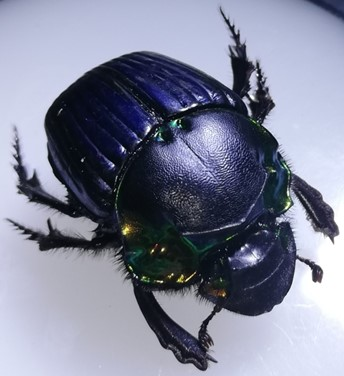
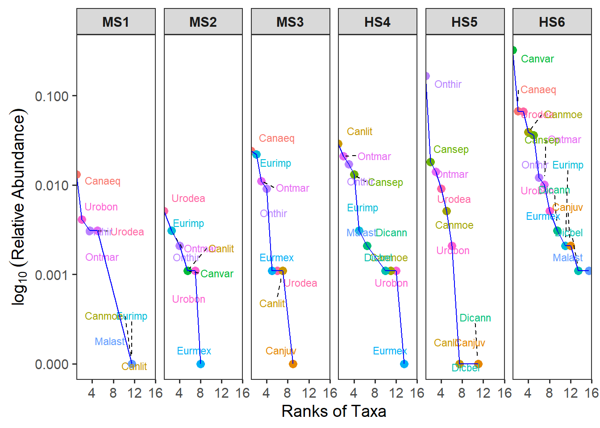
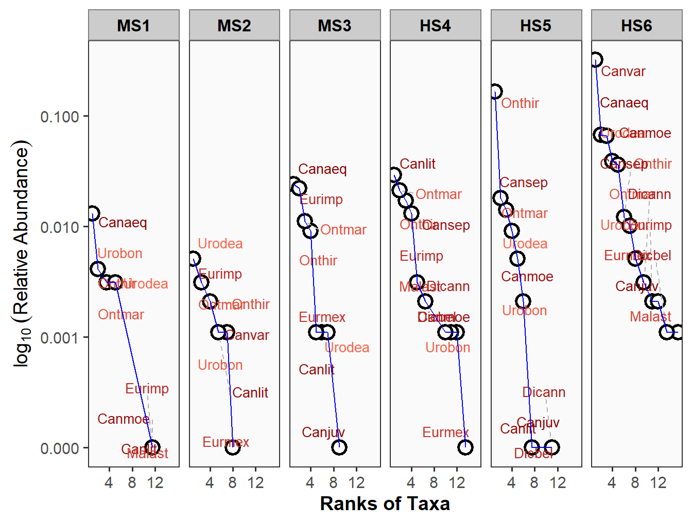
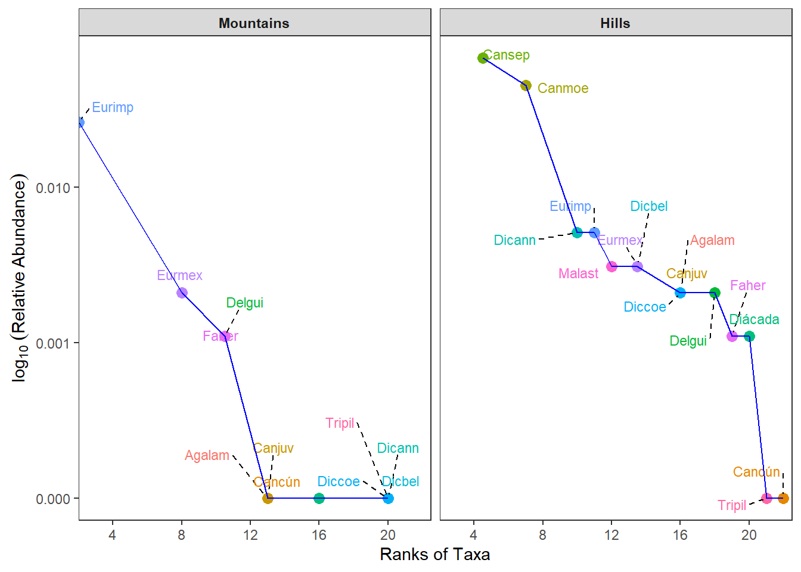
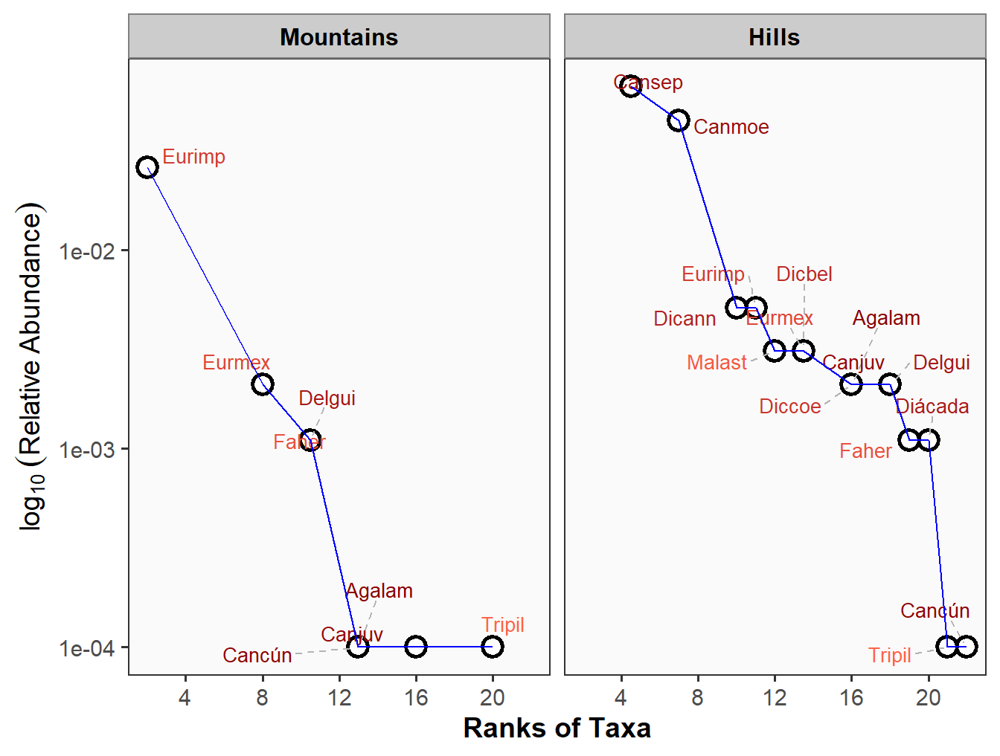
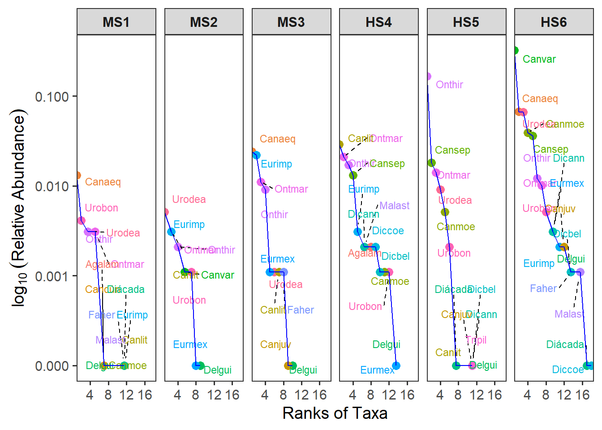
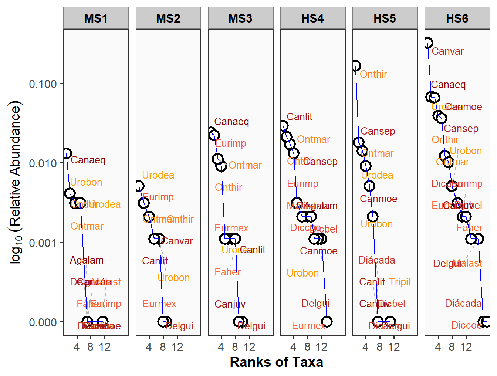
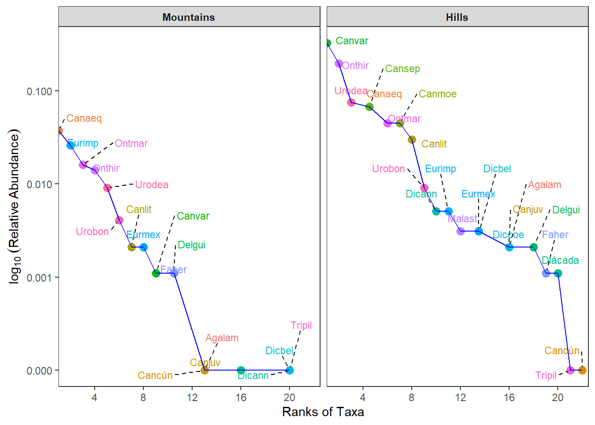
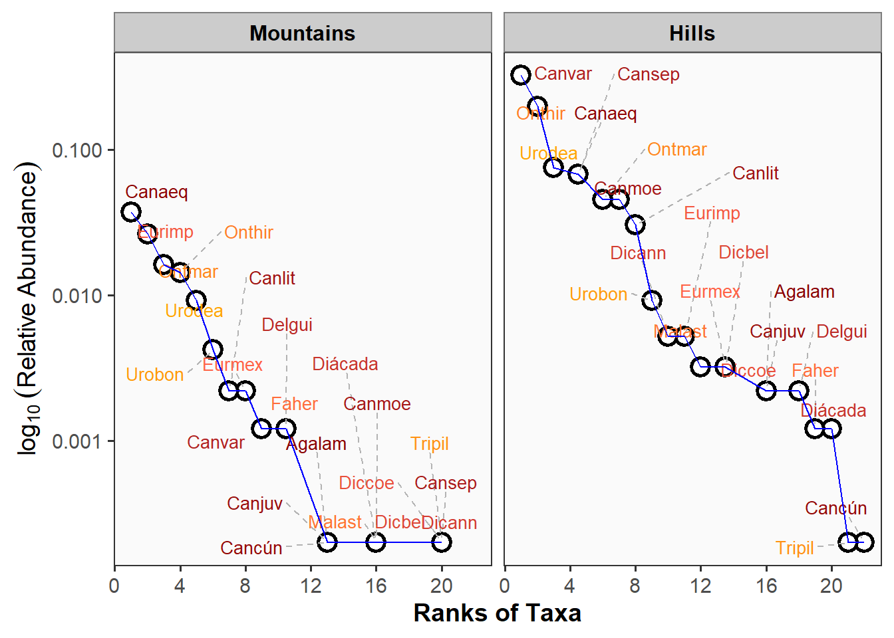

Resumen
A continuación se presenta un ajuste de las curvas rango abundancia distribución - RAD, de acuerdo a los requerimientos del manuscrito, obteniendo las abundancias relativas sobre la abundancia total global.
- Primero se presentan las curvas por sitios y por paisajes, con las 15 especies más abundantes, permitiendo mejorar la visualización de los taxones, sin que se sature demasiado la figura (opción usada en el manuscrito).
- Posteriormente se presentan las figuras con todas las especies, como una opción paralela (figuras de los sitios con saturación de taxones).
Para los sitios, sugiero utilizar las figuras con los 15 taxones más abundantes (Figure 1 y Figure 2). Para los paisajes, sugiero usar todos los taxones (Figure 7 v Figure 8).
Ajusté el eje Y, para que se visualicen mejor los taxones que se ubican cerca a valores de cero con el eje Y de las curvas.
Cargar las librerías
Se requiere cargar las librerías para el análisis de diversidad alfa, gamma y beta, por descomposición de las escalas alfa y gamma.
Cargar la base de datos
Como el análisis de diversidad beta se realizará con datos de abundancia y de presencia-ausencia, inicialmente se requiere cargar la base de datos con valores de abundancia.
1. Diversidades alfa con 15 especies
1.1 Curvas RAD (Localidades)
Se realizarán los diagramas con las quince (15) especies de coprófagos más abundantes en las localidades evaluadas. Este diagrama permite hacer una exploración de los patrones de abundancia de los principales taxones de las muestras en comparación, como complemento a los modelos paraétricos a realizar.
Nota: Esta figura es la que sugiero para el manuscrito, porque permite visualizar mejor a los taxones (los más abundantes).
Se observa que las localidades 4 a 6 (localidades de lomeríos) son las de mayor proporción de especies abundantes o dominantes (Figure 1).

Esta es otra opción gráfica para la visualización de los 15 taxones más abundantes por cada sitio (Figure 2).

1.2 Diversidades alfa - Curvas RAD (Paisajes)
El paisaje con mayor proporción de taxones dominantes es el de Lomeríos (Figure 1).


2. Diversidades alfa con todas las especies
2.1 Curvas RAD (Localidades)


2.2 Diversidades alfa - Curvas RAD (Paisajes)
Nota: Esta figura es la que sugiero para el manuscrito, por la facilidad de visualizar a todas las especies, diferente a lo que sucede con los sitios, donde son más páneles y se saturan con más facilidad.
El paisaje con mayor proporción de taxones dominantes es el de Lomeríos (Figure 7).

